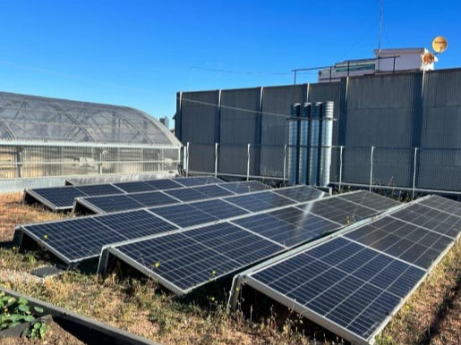

Working with Others:
- Emphasize collaboration with peers.
- Recognize the value of diverse perspectives and skills.
- Foster effective teamwork in professional settings.
- Engaging with Communities:
View "others" in terms of involved communities.
- Understand communities as complex entities with interconnected elements.
- Highlight the importance of recognizing one's role within a broader community context.
- Designing for Transition:
Adopt a design approach that acknowledges the dynamic nature of the world.
- Understand design as a mediator shaping the everyday world and people's lives.
- Acknowledge the goal of designing within a world in constant transition.
Understanding Design as a Political Practice:
- Explore the political dimensions of design.
- Recognize the impact of design decisions on societal structures.
- Questioning Our Role in Complex Assemblages:
Reflect on the multifaceted nature of design projects.
- Question the role of designers within intricate systems.
- Integrating Affected Parties in Design:
Emphasize effective inclusion of stakeholders in design processes.
- Ensure the perspectives of affected parties are integrated into the design.
- Sustainable System-Level Interventions:
Focus on sustaining interventions over extended periods.
- Consider long-term impacts of design choices on systems.
- Understanding Indigenous Communities for Land and Soil
Community assessment involves engaging through canvassing, door knocking, and participation in events. Overcoming barriers to power-sharing and access is vital for inclusive co-creation, requiring deliberate efforts to include diverse voices, ultimately strengthening project outcomes. Ensuring community needs originate from the community itself involves identifying key stakeholders, understanding power dynamics, and assessing project impacts and beneficiaries.
Co-creation sessions should be organized to sustain community input throughout the project, fostering peer-learning and cross-pollination of knowledge. The third principle underscores gathering insights from marginalized groups and managing doubts and uncertainties. Co-creating modes of governance promotes shared responsibilities and trust, while regular reconnection and information sharing maintain transparency.
Emphasizing values, fairness, and reciprocity in the network is essential, guided by a community agreement that ensures all voices are heard. Active listening, respecting differences, and using "I" statements contribute to a constructive environment, encouraging addressing issues rather than individuals.
Finally, maintaining confidentiality, acknowledging diverse beliefs, and leaning into discomfort facilitate a respectful and inclusive community engagement process.
We were given the privilege to have a tour around the housing building that was created sustainably. It was a very insightful session as we learned about the different creation of that housing community. There were solar panels on the roof of the building that powered the house. The house also allowed low income community members to live in the building as the rent was also very affordable.
Upon the collection of our images from day 1, we found our interests in groups to connect with each other and work within a community. I teamed up with Ana, Anna and Qianyin as all of our interests focused on the statement - How can we foster connectivity and inclusivity between communities that practice hands on techniques to create art and those who rely entirely on technology to do the same.
Find the in depth details of our research and mapping for this intervention.
Once our mapping was complete, we came up with the idea to create a lo-fi prototype that relates to our intervention. To be able to combine digital art and hands-on art experience, we created a card game using cardboard and the vinyl cutter. The basic ideas of the card game were -
- Create a collage using waste magazine and newspaper bits.
- Create a traditional clay sculpture.
- Create a doodle without lifting your pen, create a one-line drawing.
- Create a light painting by taking a series of photographs.
- Create robot assisted art, experimenting with AI technology to create art.
- Incorporate electronic textiles (e-textiles) into your art by using conductive threads, LEDs, and sensors to create interactive fabric-based artwork.
- Give a command to a machine (3D printer, laser cutter etc) and create a 3D art form.
- Scan a graffiti wall. These visuals can respond to movement, creating an interactive and ever-changing street art display.
- Make a pattern of prints using different types leaves and ink colours.
- Dip a string in ink, let is flow around your paper creating a beautiful elegant pattern.
The game allows artists of all mediums to collaborate and erases the issues of intergenerational art forms.

HTML Editor